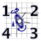
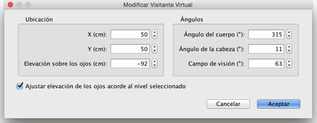
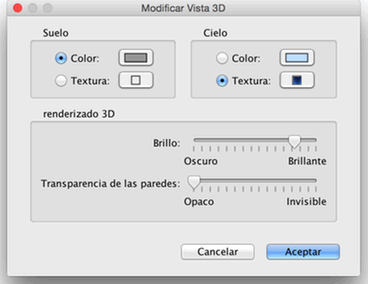

| Editando vista 3D | |||
Elige vista 3D> vista Aérea o vista 3D > Vista Virtual para cambiar entre los dos puntos de vista propuestos en la vista 3D.
Cuando Vista Aérea está seleccionada, la vista 3D muestra tu
casa en 3 dimensiones vista desde un punto de vista superior. En este
modo, moviendo el ratón hacia la izquierda o hacia la derecha con el
botón izquierdo pulsado gira la casa alrededor del eje vertical localizado
en el centro de la casa ; moviendo el ratón adelante o atrás con
el botón izquierdo pulsado gira la casa alrededor del eje horizontal ;
moviendo la ruleta del ratón acerca o aleja la vista 3D.
Cuando Vista Virtual está seleccionado, Un Visitante Virtual es también dibujado en el plano de la casa. Su localización y su ángulo son actualizados simultáneamente en el plano y en la vista 3D para cada movimiento del visitante. Este visitante virtual está rodeado por 4 indicadores.  |
|
Cuando el puntero del ratón está sobre uno de los hombros del visitante
o en su espalda, cambia para indicarte que puedes arrastrar y soltar
el puntero para cambiar el ángulo de la cabeza del visitante, el ángulo
del cuerpo o la elevación de su punto de vista. Mientras presionas el
botón del ratón, un texto de ayuda muestra el valor modificado.  Este panel también permite cambiar el campo de visión del visitante virtual y establecer si la elevación total del punto de vista debe ser ajustado en función del nivel seleccionado, haciendo que el visitante virtual suba o baje al nivel seleccionado. Por último, el menú Vista 3D > Modificar vista 3D... muestra el panel de vista en 3D que te permite cambiar el color o la textura del suelo y el cielo, el brillo de la luz y la transparencia de las paredes (y niveles).  |
|